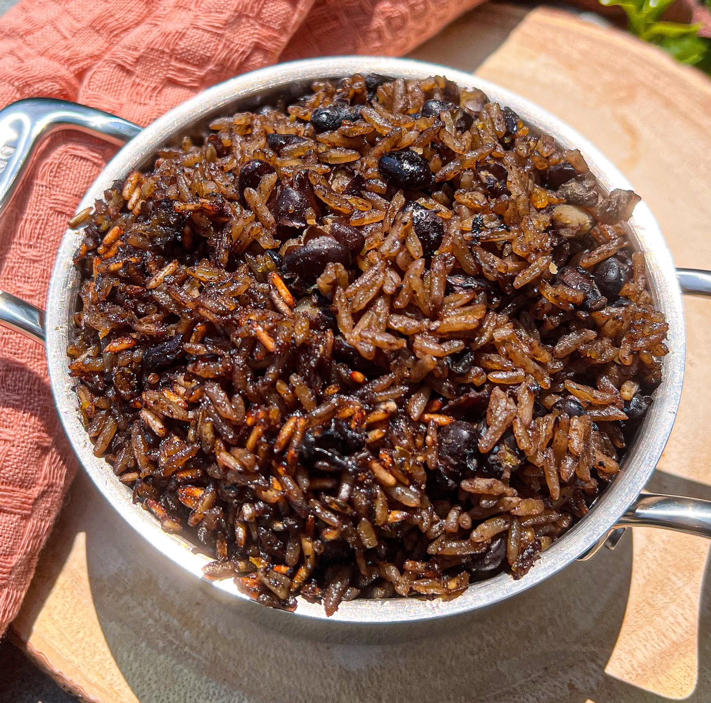

Rice and Beans

Rice and beans is the one delicious dish Latin American, Caribbean, and Africans share. Each of us has our unique twist that makes it special to our cultures. If you’re Haitian, you call it rice and beans. Meanwhile, Jamaicans call it rice and peas, and Kenyans call it rice and beans.
Ingredients
- 1 cup dried black beans
- 2 cups jasmine rice
- 3 - 4 garlic cloves
- 1 tbsp olive oil
- 1 cup coconut milk
- 2 heaping tbsp Loisa Sofrito
- 1 tsp Loisa Organic Sazón
- 2 tsp Loisa Organic Adobo
- 2 tbsp chicken bouillon
- 1 tsp Loisa Organic Whole Black Peppercorns
- 4 - 6 seeds allspice
- 7 cloves
- 4 tbsp vegetable oil
- ½ bell pepper
- 3 sprigs fresh thyme
- 4 sprigs fresh parsley
- 1 tbsp butter
Steps
- Rise your dried black beans in a colander. Add to a large pot with, 6 cups of cold water, garlic cloves, and olive oil and bring to a boil on medium high heat, Cook for 1:30-45 minutes until you can mash between your fingers, but the beans aren't too soft.
- Once the beans are cooked, strain then, setting aside 2 cups of liquid for cooking the rice.
- In a mortar & pestle, grind your peppercorns, allspice, and cloves. Set aside.
- In a hot caldero, add the vegetable oil and heat over medium high. Once hot, add in the Sofrito, stir, and let it cook for 2 -3 minutes.
- Add the strained black beans. Using your spoon or another utensil, crush up the garlic cloves from cooking the beans. Cover the pot and let cook for about 3 minutes.
- Add the dried shrimp, ground spices, Sazón, Adobo, chicken bouillon, coconut milk, and the reserved liquid from the beans. Add in the bay leaves, parsley, thyme, bell pepper, and habanero. Cover and bring to a boil.
- Once boiling, stir and taste for seasonings, adjust if needed.
- Rinse the jasmine rice twice then add to the caldero along with the butter. Stir, lower the heat to medium, and cook until the liquid is reduced. Stir occasionally.
- Once the liquid has reduced, stir the rice, lower heat to low, and cook for an additional 15-20 minutes.
- Turn off the heat, give it a stir, and enjoy!